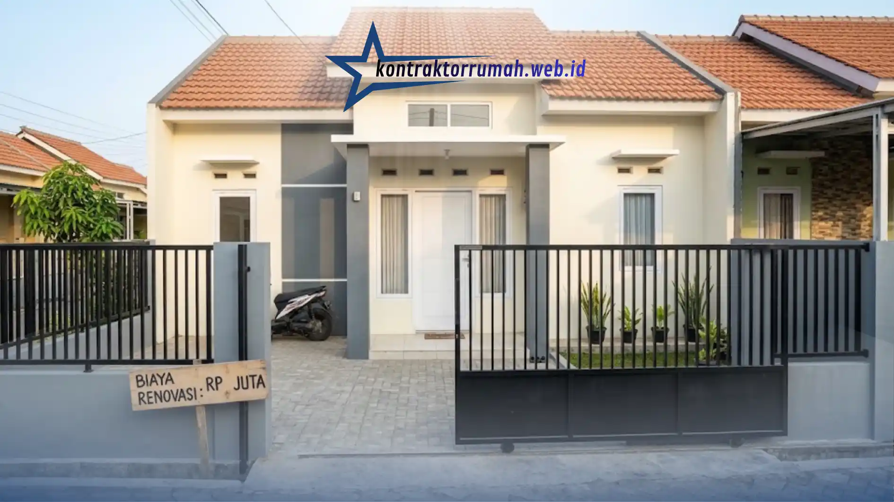

Pagar menjadi salah satu elemen yang paling sering ditambahkan atau diperbarui oleh pemilik rumah subsidi type 36, mengingat sebagian besar rumah subsidi awalnya dibangun tanpa pagar permanen. Artikel ini membahas secara mendalam tahapan perencanaan renovasi pagar, mulai dari pemilihan model, material, hingga penentuan tinggi pagar yang sesuai dengan kondisi lahan terbatas.
Poin Penting
- Sebagian besar rumah subsidi dibangun tanpa pagar permanen, sehingga penambahan pagar penting untuk keamanan & batas lahan.
- Pastikan batas lahan sesuai sertifikat sebelum mengukur panjang area yang akan dipasangi pagar.
- Pagar besi hollow galvanis atau kombinasi tembok pendek & railing besi cocok untuk lahan terbatas.
- Tinggi pagar ideal berkisar satu hingga satu setengah meter agar tetap aman tanpa membuat rumah terlihat tertutup.
- Pintu dorong (sliding gate) lebih hemat ruang dibanding pintu ayun dua daun pada lahan depan yang sempit.
Mengapa Pagar Penting Ditambahkan pada Rumah Subsidi
Ketiadaan pagar pada rumah subsidi umumnya membuat batas lahan menjadi kurang jelas secara visual, sekaligus mengurangi rasa aman penghuni terutama di lingkungan padat penduduk. Selain fungsi keamanan, pagar juga berperan dalam menegaskan batas properti secara fisik sesuai dengan luas lahan yang tertera pada sertifikat kepemilikan.
Dari sisi tampilan, penambahan pagar juga membantu menyempurnakan fasad rumah subsidi yang sebelumnya terlihat polos, sehingga rumah terasa lebih rapi dan terawat.
Tahapan Renovasi Pagar Rumah Subsidi Type 36
Bagaimana Langkah Awal Merencanakan Renovasi Pagar?
Langkah awal merencanakan renovasi pagar rumah subsidi adalah memastikan batas lahan sesuai sertifikat, mengukur panjang area yang akan dipasangi pagar, kemudian menentukan model dan material yang sesuai dengan kondisi lahan serta bujet yang tersedia.
Memastikan batas lahan sesuai sertifikat penting dilakukan agar pemasangan pagar tidak melewati batas properti tetangga maupun fasilitas umum di sekitar rumah. Setelah batas lahan dipastikan, pengukuran panjang area pagar dapat dilakukan untuk memperkirakan kebutuhan material secara lebih akurat.
Bagaimana Memilih Model Pagar yang Sesuai untuk Lahan Terbatas?
Model pagar yang sesuai untuk lahan terbatas pada rumah subsidi umumnya berupa pagar besi hollow dengan desain minimalis atau kombinasi pagar tembok pendek dan railing besi, karena tidak memakan banyak ruang dan tetap memberi kesan terbuka.
Pagar besi hollow menjadi pilihan populer karena bentuknya yang ramping tidak membuat lahan depan rumah terasa semakin sempit. Desain garis vertikal maupun horizontal pada besi hollow juga dapat disesuaikan dengan gaya fasad rumah subsidi yang umumnya bergaya minimalis modern.
Sebagai alternatif, kombinasi pagar tembok pendek dengan railing besi di bagian atas memberikan kesan yang lebih kokoh, sekaligus tetap mempertahankan sirkulasi udara dan pandangan ke arah rumah dari luar.
Material Apa yang Direkomendasikan untuk Pagar Rumah Subsidi?
Material yang direkomendasikan untuk pagar rumah subsidi adalah besi hollow galvanis karena memiliki lapisan anti karat, serta beton pracetak yang menawarkan proses pemasangan lebih cepat dibandingkan pengecoran manual.
Besi hollow galvanis dipilih karena lapisan pelindungnya membantu material lebih tahan terhadap paparan hujan dan panas secara langsung, sehingga risiko karat dapat diminimalkan meski tanpa perawatan berlebihan. Material ini juga tersedia dalam berbagai ketebalan yang dapat disesuaikan dengan bujet renovasi.
Beton pracetak menjadi alternatif bagi pemilik rumah yang menginginkan tampilan pagar lebih kokoh dengan waktu pengerjaan yang relatif singkat, meski umumnya membutuhkan biaya awal yang sedikit lebih tinggi dibandingkan pagar besi.

Pemilihan material dan tinggi pagar yang tepat memengaruhi tampilan fasad sekaligus estimasi biaya renovasi rumah subsidi type 36.
Berapa Tinggi Pagar yang Ideal untuk Rumah Subsidi Type 36?
Tinggi pagar yang ideal untuk rumah subsidi type 36 umumnya berkisar antara satu hingga satu setengah meter, karena tetap memberikan rasa aman tanpa membuat rumah terlihat tertutup total dari lingkungan sekitar.
Pagar yang terlalu tinggi berisiko membuat rumah type 36 yang sudah berukuran mungil terlihat semakin sempit dan tertutup dari luar. Di sisi lain, pagar yang terlalu rendah kurang optimal dari sisi fungsi keamanan. Kombinasi tembok pendek dengan railing besi di bagian atas sering menjadi solusi tengah yang dianggap ideal untuk rumah subsidi dengan lahan terbatas.
Bagaimana Memilih Jenis Pintu Pagar yang Sesuai Kebutuhan?
Jenis pintu pagar yang sesuai untuk rumah subsidi dengan lahan terbatas umumnya berupa pintu dorong (sliding gate) atau pintu ayun dua daun, tergantung pada lebar lahan depan rumah yang tersedia.
Pintu dorong dipilih apabila lebar lahan depan rumah cukup terbatas, karena model ini tidak membutuhkan ruang ayun tambahan seperti pintu pagar konvensional. Sebaliknya, pintu ayun dua daun masih dapat digunakan apabila lahan depan rumah memiliki ruang yang cukup untuk membuka pintu ke arah luar tanpa mengganggu akses jalan di depan rumah.
Tips Tambahan Renovasi Pagar Rumah Subsidi
Beberapa hal tambahan yang perlu diperhatikan saat merenovasi pagar rumah subsidi meliputi pemilihan warna cat yang senada dengan fasad rumah, penambahan lapisan anti karat secara berkala untuk pagar besi, serta memastikan pondasi pagar cukup kuat menahan beban material yang dipilih.
Pemilihan warna cat yang senada dengan fasad rumah membantu menciptakan tampilan yang lebih menyatu antara pagar dan bangunan utama. Sementara itu, perawatan anti karat secara berkala penting dilakukan terutama pada pagar besi yang terpapar hujan dan panas secara langsung sepanjang tahun.
Catatan dari tim Kontraktor Rumah: Kontraktor Rumah beroperasi sebagai mitra konstruksi berbadan hukum PT resmi, siap membantu perencanaan renovasi pagar rumah subsidi type 36 mulai dari pengukuran lahan, penyusunan RAB transparan, hingga eksekusi oleh tenaga kerja berpengalaman. Pemilihan besi hollow galvanis serta penentuan tinggi pagar yang proporsional menjadi standar kerja tim dalam menangani proyek renovasi pagar rumah subsidi di kawasan Jabodetabek.
FAQ Seputar Renovasi Pagar Rumah Subsidi
Renovasi pagar rumah subsidi type 36 sebaiknya dimulai dari memastikan batas lahan sesuai sertifikat dan mengukur panjang area yang akan dipasangi pagar. Model pagar besi hollow atau kombinasi tembok pendek dengan railing besi umumnya menjadi pilihan yang sesuai untuk lahan terbatas, dengan tinggi pagar ideal berkisar satu hingga satu setengah meter. Pemilihan material seperti besi hollow galvanis atau beton pracetak juga penting dipertimbangkan agar pagar lebih tahan lama menghadapi cuaca.